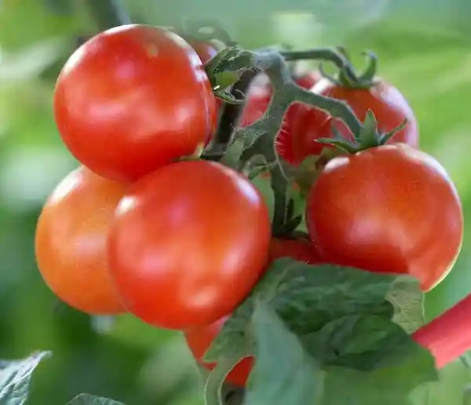

Welcome to Savanna Sweetness
We Grow Sweetness Learn everything about successful tomato farming in Uganda.
Why Tomatoes?
Tomatoes are a profitable and versatile crop for Ugandan farmers. With the right knowledge and care, you can achieve excellent yields and build a thriving agribusiness. Why Do Tomatoes Split as They Ripen? Tomatoes are popular for their versatility and health benefits. They are rich in antioxidants like lycopene, which is linked to heart health and potential cancer risk reduction. They are also a good source of vitamins C and A, potassium, and fiber, contributing to overall well-being. Additionally, tomatoes are relatively easy to grow, making them a popular choice for home gardeners.